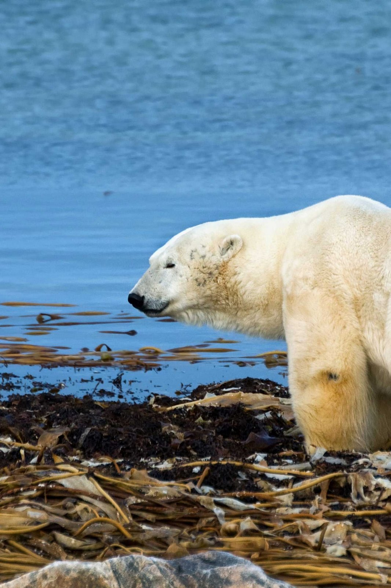
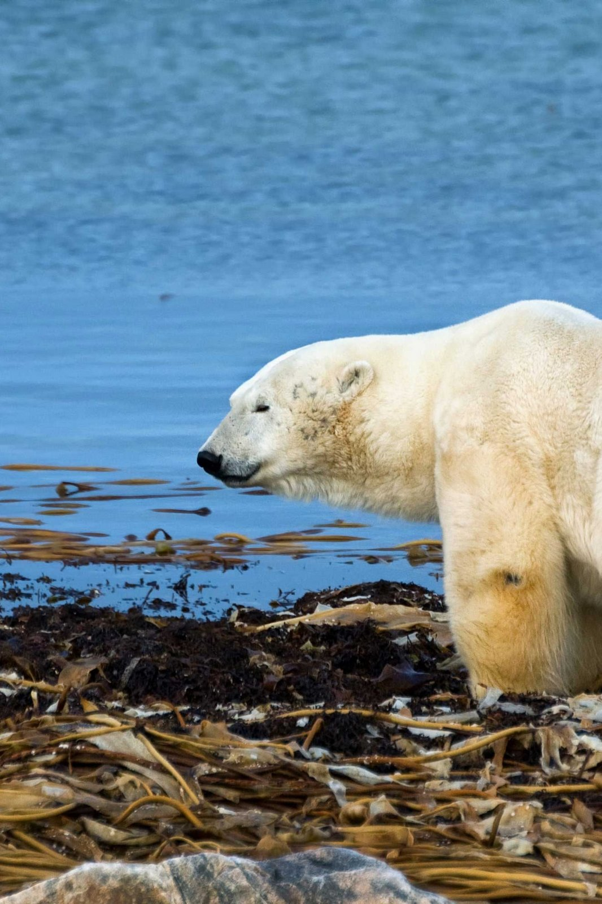

The current warming trend is of particular significance because it is unequivocally the result of human activity since the mid-20th century and proceeding at a rate that is unprecedented over millennia. It is undeniable that human activities have warmed the atmosphere, ocean, and land and that widespread and rapid changes in the atmosphere, ocean, cryosphere, and biosphere have occurred.
Ice cores drawn from Greenland, Antarctica, and tropical mountain glaciers have shown that the Earth’s climate responds to changes in greenhouse gas levels. Evidence has revealed that current warming is occurring roughly ten times faster than the average rate of ice-age-recovery warming. Carbon dioxide from human activity is increasing more than 250 times faster than it did from natural sources after the last Ice Age.
It's the little things that make a big difference. Obviously one person or a few people are not enough to save Earth from climate disasters, but if each person decided to play even the smallest role, then a big difference can be made. Here are the top 6 things we can do to save the planet:
 

Use less energy by lowering your heating and cooling, switching to LED light bulbs and energy-efficient electric appliances, washing your laundry with cold water, or hanging things to dry instead of using a dryer. See if you can switch to renewable sources such as wind or solar.
As people with legs, we can easily walk or ride a bike instead of driving. For longer distances, consider taking a train or bus and carpool whenever possible. Airplanes burn large amounts of fossil fuels, producing significant greenhouse gas emissions on top of the gasses already being released into the air. When you can, meet virtually, take a train, or skip that long-distance trip altogether. If you plan to buy a car, consider going electric, with more and cheaper models selling on the market.
Consistently endangering natural habitats, 40% of the world's cut timber is actually used for paper. I'm sure you've read that they allow the environmnet to regenerate, but it isn't reaching it's max potential once people damage it again before it has a chance to regrow.
Buy only what you can use and compost any leftovers. Eating more vegetables, fruits, whole grains, legumes, nuts, and seeds, and less meat and dairy, can significantly lower your environmental impact. Producing plant-based foods generally results in fewer greenhouse gas emissions and requires less energy, land, and water. Not to mention, they're fresh from the planet we're slowing killing.
Use your social media to spread awareness on the climate change. Help fight the barrage of disinformation that misleads and confuses the public to believe that climate change is fake.
Electronics, clothes, and other items we buy cause carbon emissions at each point in production, from the extraction of raw materials to manufacturing and transporting goods to market. To protect our climate, buy fewer things, shop second-hand, repair what you can, and recycle.